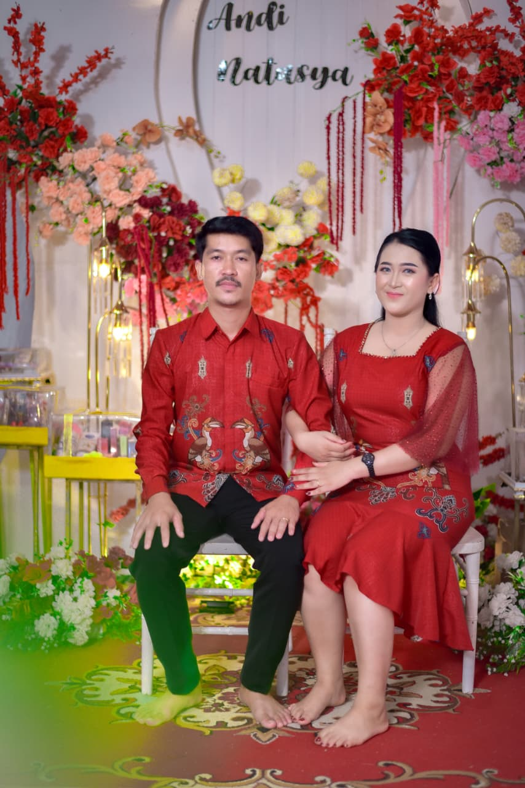
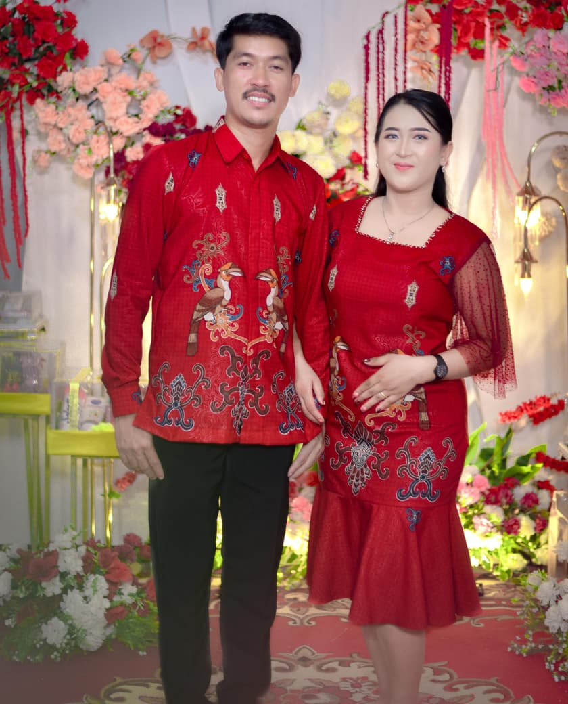
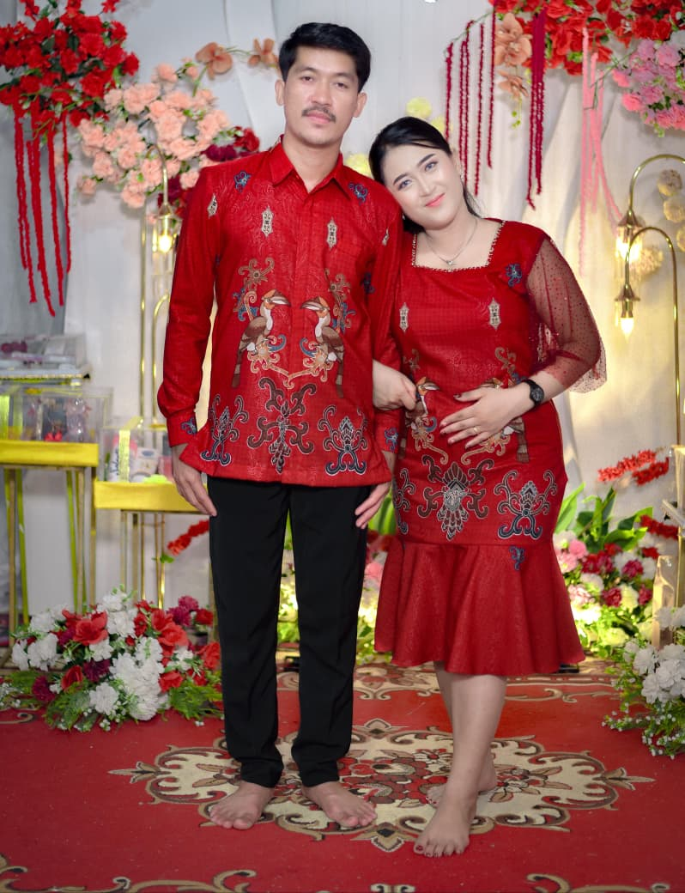
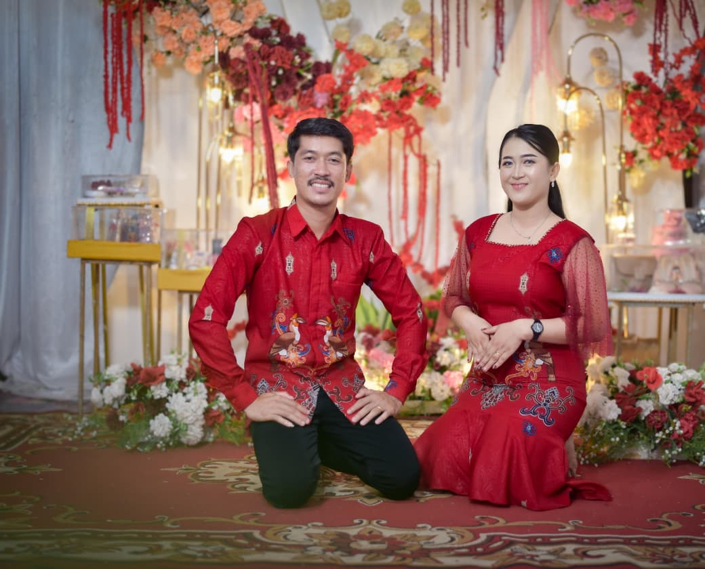

THE WEDDING OF
SAVE THE DATE
SABTU, 27 JUNI 2026
(Matius 19:6)

Putra kedua dari Bapak Indiarno
& Ibu Yusta Ahir

Putri kedua dari Bapak Erik Suheri
& Ibu Yustina Muden
Pemberkatan Nikah
Gereja Santa Maria rosario suci tapang Sambas, Desa tapang Semadak, kecamatan Sekadau Hilir, Kabupaten Sekadau, Kalimatan Barat
10:00 WIB - Selesai
Acara Adat
Kediaman mempelai pria
10:00 WIB - Selesai
Juli 2024: Pertemuan pertama yang berkesan. Meski tanpa status berpacaran, kami memutuskan untuk saling berkomitmen satu sama lain.
September 2025: Setelah menjalani masa pengenalan, kami memantapkan hati untuk melangkah ke jenjang yang lebih serius.
November 2025: Pertemuan kedua belah pihak keluarga diadakan untuk menentukan hari bahagia serta tempat pertunangan kami.
Juni 2026: Dengan berkat Tuhan, kami memutuskan untuk mengikat janji suci dan bersatu di hadapan Altar Kudus-Nya.




Tanpa mengurangi rasa hormat, bagi Bapak/Ibu/Saudara/i yang ingin memberikan tanda kasih, dapat melalui saluran di bawah ini.
Sebelumnya, doa dan kehadiran Anda sudah merupakan hadiah yang sangat berarti bagi kami. Tidak ada paksaan atau keharusan dalam bentuk apa pun.
1460016386497 a/n MARKURIUS ANDI
1460019574594 a/n NATASYA GERAENI BARANGO
(2 Korintus 13:11)
Ucapan & Doa
Memuat ucapan...
CREATED BY TIA ANGERTI